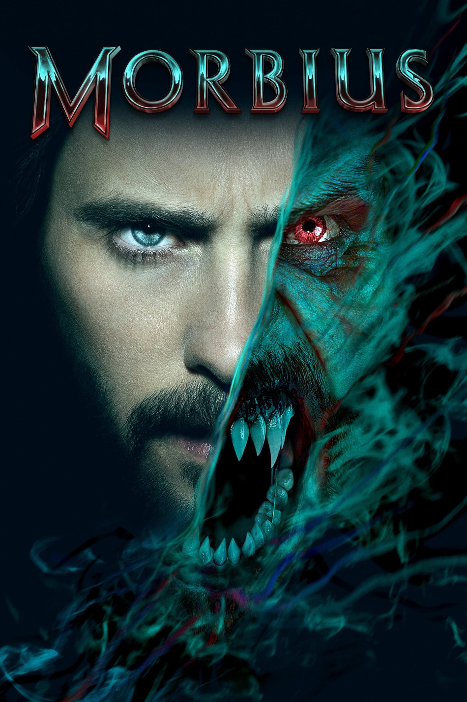

Мировая премьера: 1 апреля 2022
Слоган: Встречайте новую легенду.
Сюжет: Доктор Майкл Морбиус страдает от редкого и опасного заболевания крови. Всю свою сознательную жизнь он посвятил поискам лекарства и в какой-то момент решается на рискованный эксперимент. Но средство, поначалу сулившее полный успех, меняет тело Морбиуса, превращая его в кровожадного монстра. Сможет ли добро победить зло, или Морбиус станет жертвой своих таинственных новых желаний?
Режиссёр: Даниэль Эспиноса
В основе: Комиксы о Морбиусе (США, выходят с 1971, авторы – Рой Томас и Гил Кейн)
Серия: Вселенная Человека-Паука
В ролях:
| Джаред Лето | Доктор Майкл Морбиус |
| Мэтт Смит | Майло |
| Адриа Архона | Доктор Мартина Бэнкрофт |
| Джаред Харрис | Доктор Эмиль Николас |
| Тайриз Гибсон | Агент Саймон Страуд |
| Аль Мадригал | Агент Альберто Родригес |
| Арчи Рено | Бобби |
Бюджет: $ 75 млн.
Кассовые сборы в США: $ 74 млн.
Кассовые сборы в мире: $ 167 млн.
Продолжительность: 1 ч. 33 мин.
Рейтинг: 5.1